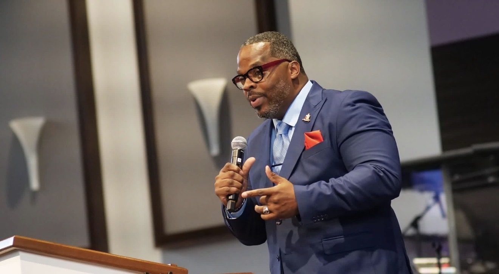

About T. L. Harris
Commissioner · District 6

T. L. Harris came up through Memphis public schools and has lived in Whitehaven for more than 30 years. On September 1, 2026, he took office as the District 6 commissioner on the Memphis-Shelby County Schools Board of Education, the board that governs the schools he grew up in.
“I always tell children that any door they want can be opened with education.”
T. L. Harris
Whitehaven roots
Harris is a graduate of East High School. He went on to study at LeMoyne-Owen College, Louisiana State University and the University of Memphis.
He has made his home in Whitehaven for more than three decades. The District 6 schools he now represents are the schools of his own neighborhood.
A working life of service
Harris is a military veteran and has worked with the Memphis Police Department. He managed cases for young people and families at Youth Villages, worked in youth ministry, held executive leadership roles and served as chief financial officer of a private medical office.
He has also produced music, written songs and worked in radio. That work sharpened his ability to communicate with all kinds of audiences.
In the neighborhoods
For three years, Harris led five community centers for the Memphis Gun Down summer program, in neighborhoods including Frayser and Raleigh.
He has said this job calls for someone willing to go into “some of the roughest parts of Memphis” with one purpose: “Let’s pull these children out. Let’s give them an opportunity.”
Why he serves
For Harris, service is personal. He once received help from the Neighborhood Christian Center. Years later he went back to work there as a case manager, supporting families through hard stretches of their own.
He believes in second chances. A person’s past should not decide their future, and strong communities are built when people have mentorship, resources, accountability, education and a real opportunity.
The work ahead
His campaign centered on reading from pre-K through third grade, accountability for results and support for teachers. Those commitments, along with safe schools and regular town halls, are tracked in public on the Priorities page, with a plain account of what he can do as one commissioner and what depends on the full board and the district.
Road to office
- May 2026Harris won the District 6 primary.
- August 2026He was elected to the Memphis-Shelby County Schools Board of Education for District 6, in the district's first partisan school board election.
- September 1, 2026He took office, succeeding Keith Williams.
At a glance
- Office
- Commissioner, District 6, Memphis-Shelby County Schools Board of Education
- Home
- Whitehaven, for more than 30 years
- Education
- East High School. Studied at LeMoyne-Owen College, Louisiana State University and the University of Memphis.
- Service
- Military veteran
- Community
- Founder, Lost and Found Foundation. Life member, Kappa Alpha Psi Fraternity, Inc. Life member, NAACP. 2024 graduate, Leaders of Color.
Sources: Memphis-Shelby County Schools, District 6 profile, verified 25 September 2026; his campaign biography, voteharris901.com/about (education list and community memberships); Chalkbeat Tennessee, 14 April 2026; Tennessee Firefly, 10 August 2026.